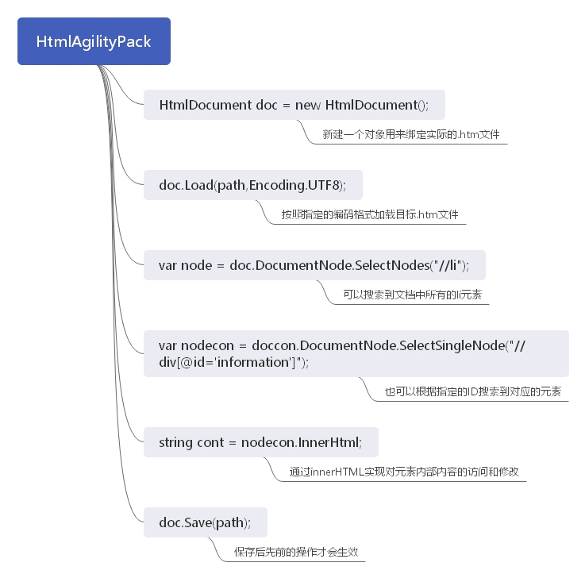

C#爬虫（04）：HtmlAgilityPack解析html文档
一、爬虫概述
C#（99）：HttpClient网络HTTP请求和相应
1、使用浏览器获取页面源码
2、HTML解析组件
- HtmlAgilityPack：https://github.com/zzzprojects/html-agility-pack/
- Fizzler.Systems.HtmlAgilityPack： https://www.nuget.org/packages/Fizzler.Systems.HtmlAgilityPack
Fizzler是用于文档层次结构的W3C选择器解析器和通用选择器框架。这个包使Fizzler优于HTMLAgilityPack，为HtmlNode对象添加了QuerySelector和QuerySelectorAll(来自选择器API Level 1)。 - Jumony（2014年不更新了）:https://github.com/Ivony/Jumony
二、HtmlAgilityPack介绍
参考：
GitHub：https://github.com/zzzprojects/html-agility-pack/releases
官网：https://html-agility-pack.net/
https://www.nuget.org/packages/HtmlAgilityPack/
HtmlAgilityPack(以下简称HAP)是一个基于.Net的、第三方免费开源的微型类库，主要用于在服务器端解析html文档。
HtmlAgilityPack为网页提供了标准的DOM API和XPath导航 。使用WebBrowser和HttpWebRequest下载的网页可以用Html Agility Pack来解析。
Xpath表达式的参考文档可见：https://www.cnblogs.com/springsnow/p/11810458.html#_label0
三、属性和方法
HtmlAgilityPack中的HtmlNode类与XmlNode类差不多，HtmlDocument类与XmlDocument类差不多。
参考：https://www.cnblogs.com/springsnow/p/12883050.html
1、属性：
- OwnerDocument：节点所在的HtmlDocument文档
- Attributes： 获取节点的属性集合
- ParentNode：获取该节点的父节点
- ChildNodes：获取子节点集合(包括文本节点)
- FirstChild： 获取第一个子节点
- LastChild： 获取最后一个子节点
- Id： 获取该节点的Id属性
- Name：Html元素名
- NodeType： 获取该节点的节点类型
- InnerHtml： 获取该节点的Html代码
- InnerText： 获取该节点的内容，与InnerHtml不同的地方在于它会过滤掉Html代码，而InnerHtml是连Html代码一起输出
- OuterHtml： 整个节点的代码
- PreviousSibling： 获取前一个兄弟节点
- NextSibling： 获取下一个兄弟节点
- HasAttributes ：判断该节点是否含有属性
- HasChildNodes： 判断该节点是否含有子节点
- HasClosingAttributes ： 判断该节点的关闭标签是否含有属性(</xxx class="xxx">)
- Closed：该节点是否已关闭(</xxx>)
- ClosingAttributes在关闭标签的属性集合StreamPosition： 该节点位于整个Html文档的字符位置
- XPath： 根据节点返回该节点的XPath
2、方法：
- Load (string path)： 从路径中加载一个文档
- SelectNodes (string xpath)： 根据XPath获取一个节点集合
- SelectSingleNode (string xpath)： 根据XPath获取唯一的一个节
- Ancestors ()： 返回此元素的所有上级节点的集合。
- DescendantNodes ()： 获取所有子代节点
- Element (string name)： 根据参数名获取一个元素
- Elements (string name)： 根据参数名获取匹配的元素集合
- GetAttributeValue(string name, bool def)： 帮助方法，用来获取此节点的属性的值(布尔类型)。如果未找到该属性，则将返回默认值。
- ChildAttributes(string name)： 获取所有子元素的属性(参数名要与元素名匹配)
- IsEmptyElement(string name)： 确定是否一个空的元素节点。
- IsOverlappedClosingElement(string text)： 确定是否文本对应于一个节点可以保留重叠的结束标记。
- AppendChild(HtmlNode newChild)： 将参数元素追加到为调用元素的子元素(追加在最后)
- PrependChild(HtmlNode newChild)： 将参数中的元素作为子元素，放在调用元素的最前面
- Clone()： 本节点克隆到一个新的节点
- CopyFrom(HtmlNode node)： 创建重复的节点和其下的子树。
- CreateNavigator()： 返回的一个对于此文档的XPathNavigator
- CreateNode(string html)： 静态方法，允许用字符串创建一个新节点
- CreateRootNavigator()： 创建一个根路径的XPathNavigator
- InsertAfter(HtmlNode newChild, HtmlNode refChild)： 将一个节点插入到第二个参数节点的后面，与第二个参数是兄弟关系
- InsertBefore(HtmlNode newChild, HtmlNode refChild)： 将一个节点插入到第二个参数节点的后面，与第二个参数是兄弟关系
- Remove()： 从父集合中移除调用节点
- SetAttributeValue(string name, string value)： 设置调用节点的属性
- WriteContentTo()： 将该节点的所有子级都保存到一个字符串中。
- WriteTo()： 将当前节点保存到一个字符串中。
- Save(string filename)： 将HTML文档保存到指定的路径
四、用法举例

下面是几个简单使用说明：
1、获取网页title：
doc.DocumentNode.SelectSingleNode("//title").InnerText;//XPath中：“//title”表示所有title节点。SelectSingleNode用于获取满足条件的唯一的节点。
2、获取所有的超链接：
doc.DocumentNode.Descendants("a")
3、获取name为kw的input，也就是相当于getElementsByName()：
var kwBox = doc.DocumentNode.SelectSingleNode("//input[@name='kw']");
示例：

private void Form1_Load(object sender, EventArgs e) { List<Result> list = new List<Result>(); HtmlWeb htmlWeb = new HtmlWeb(); htmlWeb.OverrideEncoding = Encoding.UTF8;//编码，这里网上有些很多写法都不正确 HtmlAgilityPack.HtmlDocument htmlDoc = htmlWeb.Load(@http://www.cnblogs.com/); //选择博客园首页文章列表 htmlDoc.DocumentNode.SelectNodes("//div[@id='post_list']/div[@class='post_item']").//双斜杠“//”表示从跟节点开始查找 AsParallel().ToList().ForEach(ac => { //抓取图片，因为有空的，所以拿变量存起来 HtmlNode node = ac.SelectSingleNode(".//p[@class='post_item_summary']/a/img"); list.Add(new Result { url = ac.SelectSingleNode(".//a[@class='titlelnk']").Attributes["href"].Value, title = ac.SelectSingleNode(".//a[@class='titlelnk']").InnerText, //图片如果为空，显示默认图片 img = node == null ? "http ://www.cnblogs.com//Content/img/avatar.png" : node.Attributes["src"].Value, content = ac.SelectSingleNode(".//p[@class='post_item_summary']").InnerText }); }); foreach (Result item in list) { this.listBox1.Items.Add(item.title); } }
/// <summary> /// 页面抓取结果 /// </summary> public class Result { /// <summary> /// 链接 /// </summary> public string url { get; set; } /// <summary> /// 标题 /// </summary> public string title { get; set; } /// <summary> /// 头像地址 /// </summary> public string img { get; set; } /// <summary> /// 正文内容 /// </summary> public string content { get; set; } }
示例2：下载微软文档
using HtmlAgilityPack; using System; using System.Collections.Generic; using System.IO; using System.Text; namespace ConsoleApp4 { internal class Program { private static void Main(string[] args) { //网页地址： string Url = "https://docs.microsoft.com/zh-cn/aspnet/mvc/overview/getting-started/getting-started-with-ef-using-mvc/implementing-inheritance-with-the-entity-framework-in-an-asp-net-mvc-application"; List<string> list = new List<string>(); ; HtmlWeb htmlWeb = new HtmlWeb(); htmlWeb.OverrideEncoding = Encoding.UTF8; HtmlDocument htmlDoc = htmlWeb.Load(Url); HtmlNode node = htmlDoc.DocumentNode.SelectSingleNode("//main[@id='main']"); //去掉英文翻译 var a = node.SelectNodes("//span[@class='sxs-lookup']"); foreach (HtmlNode b in a) { b.Remove(); } string src = ""; //图片相对路径改成绝对路径 var imgNode = node.SelectNodes("//img[@data-linktype='relative-path']"); foreach (HtmlNode node1 in imgNode) { src = node1.GetAttributeValue("src", ""); var url = new Uri(htmlWeb.ResponseUri, src); node1.SetAttributeValue("src", url.AbsoluteUri); } //链接路径转换 var hrefNode = node.SelectNodes("//a[@data-linktype='relative-path']|//a[@data-linktype='absolute-path']"); foreach (HtmlNode node1 in hrefNode) { src = node1.GetAttributeValue("href", ""); var url = new Uri(htmlWeb.ResponseUri, src); node1.SetAttributeValue("href", url.AbsoluteUri); } //找到所有的H2标签，然后加上顺序。 var h2Node = node.SelectNodes("//h2"); var arr = new string[] { "一", "二", "三", "四", "五", "六", "七", "八", "九", "十", "十一", "十二", "十三", "十四", "十五", "十六", "十七", "十八", "十九", "二十" }; if (h2Node != null) { for (int i = 0; i < h2Node.Count; i++) { h2Node[i].InnerHtml = arr[i] + "、" + h2Node[i].InnerHtml; //找到所有的H3标签，然后加上顺序。 var h3Node = h2Node[i].SelectNodes("following-sibling::h2|following-sibling::h3"); if (h3Node is null) break; for (int j = 0; j < h3Node.Count; j++) { if (h3Node[j].Name == "h2") break; else h3Node[j].InnerHtml = (j + 1) + "、" + h3Node[j].InnerHtml; } } } HtmlNode myNOde = htmlDoc.CreateElement("div"); //去掉前面无用的部分 var OK = node.SelectNodes("nav[1]/following-sibling::*"); myNOde.AppendChildren(OK); //添加原文连接： HtmlNode nodeOriUrl = htmlDoc.CreateElement("p"); nodeOriUrl.InnerHtml = "原文：<a href='" + htmlWeb.ResponseUri + "'>" + htmlWeb.ResponseUri + "</a>"; myNOde.PrependChild(nodeOriUrl); //写入到本地文件 TextWriter wr = new StreamWriter(@"aa.html"); myNOde.WriteTo(wr); wr.Close(); } } }
五、Fizzler.Systems.HtmlAgilityPack：
Hazz为HTMLAgilityPack实现CSS选择器。它基于Fizzler，一个通用的CSS选择器解析器和生成器库。
Hazz以前称为Fizzler.Systems.HtmlAgilityPack。
// Load the document using HTMLAgilityPack as normal var html = new HtmlDocument(); html.LoadHtml(@" <html> <head></head> <body> <div> <p class='content'>Fizzler</p> <p>CSS Selector Engine</p></div> </body> </html>"); // Fizzler for HtmlAgilityPack is implemented as the // QuerySelectorAll extension method on HtmlNode var document = html.DocumentNode; // yields: [<p class="content">Fizzler</p>] document.QuerySelectorAll(".content"); // yields: [<p class="content">Fizzler</p>,<p>CSS Selector Engine</p>] document.QuerySelectorAll("p"); // yields empty sequence document.QuerySelectorAll("body>p"); // yields [<p class="content">Fizzler</p>,<p>CSS Selector Engine</p>] document.QuerySelectorAll("body p"); // yields [<p class="content">Fizzler</p>] document.QuerySelectorAll("p:first-child");


posted on 2020-07-10 10:50 springsnow 阅读(2100) 评论(0) 编辑 收藏 举报

· 斗鱼 H5 直播原理解析，它是如何省了 80% 的 CDN 流量？
· 超强的纯 CSS 鼠标点击拖拽效果
· 新零售SaaS架构：中央库存系统架构设计
· 不安装运行时运行 .NET 程序 - NativeAOT
· 从 C# 崩溃异常 中研究页堆布局
· 微软秋季发布会：5G版Surface Pro亮相 加深与苹果生态融合
· 扎克伯格谈新款万元VR头显：成本价，我们不像苹果那样定高价
· 比亚迪×奔驰的火爆新车，让我开到半夜不回家
· 抖音集团上线新 Logo
· 腾讯视频否认将接入 88VIP
» 更多新闻...